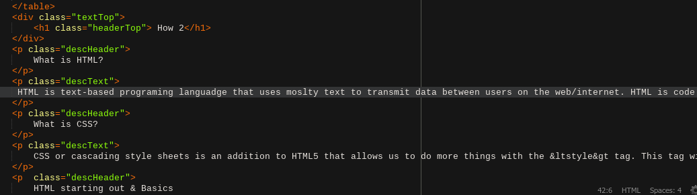
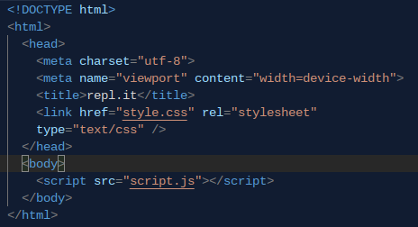
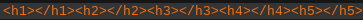
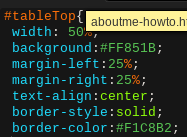
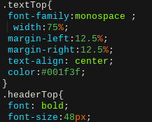
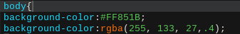
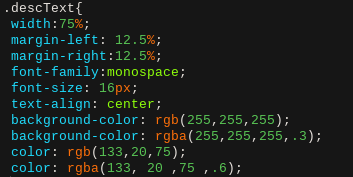
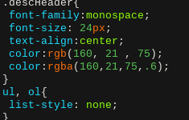

HTML is text-based programing languadge that uses moslty text to transmit data between users on the web/internet. HTML is code that uses structures in the sence of tags like <function or tag> The text(optional) </function or tag>. Now how can someone make colors alignment and other cool tricks you may ask. This is were CSS come in.
CSS or cascading style sheets is an addition to HTML5 that allows us to do more things with the <style> tag. This tag will come before the body tag due to it being a backend tag which just means its made by the programer and is not visible as text/image to the veiwer. This tag makes my website pretty. I dont use the actualy tag instead I use <link> tag and refer to the a separete document in my c9 fodler to style  the page. This is why both pages are so simmilar in styling. It is because the pages use the same style refrence called index.css. Ok to recap you now know what HTML is and how to make tags but how do you make HTML apear you may ask. This is where my next paragraph comes in.
the page. This is why both pages are so simmilar in styling. It is because the pages use the same style refrence called index.css. Ok to recap you now know what HTML is and how to make tags but how do you make HTML apear you may ask. This is where my next paragraph comes in.
-
Go to Repl.it and make a new HTML repl and you will be set.
-

-
In c9 you need to type in ! then press tab and you are set while if you are doing it in a notepad file go to repl.it and copy over the setup they give you.
-
This section will go over the main parts of arguments in HTML. We will start from basics and go down to like tables. Remember all tags need to be surrounded by <> and at the end of your text finished like this. First and foremost the h1 h2 h3 h4 h5 .... tags.
-

-
These are header tags which set you font to bold and big the smaller the number the bigger the font. Decimals not included. these tags are where you header or subheaders would go. Not for me tho more on that later. Now we use the p tag which is the paragraph tag it also goes into the body tag. Then we have the div tag which has no real effect except splitting your text into sections via css. There are more tags like table tags which include table tr thtd. Which are the table tags where table is the starting tag inthere you write a tr tag which is a table row tag then a th or td which are table data and table header tags. Then you structure it in various ways to make tables.List tags like ul ol mean un ordered and ordered lists and then li is list info tag. All tags can next more tags like the th tag can nest or have a image tag in it. Now we go over the more technical tags. the img tag is written like this <img src="image url or file location">. with no end tag then you have the link tag which helps you embed a separate css style sheet but more on that in the css chapter. The last tag that I used was the A which will tranport you to a new website or link on click.Like the img tag uses a special argument this time you write it like so <a href="link or file location"> then your text that you want to display </a> to finish the tag of.
To setup css in your HTML document you need to add a style tag or add a link tag like so <link rel="stylesheet" href="file location" type="text/css"> after you can add styling into your document. now there are limiless tags in css so I will only go over the ones in my code. Here is my css document. Step by Step
- 
- Start from the up down First point is the whole #tableTop{ This is something called an ID ids are used to call a tag and somethimes bookmark it in this case any < tag id=" > will follow the rules of this tag. the next tags are witdh 50% which sets the width of the element to take up 50% of the page. background sets the background color to a bight orange tint via a hexidecimal code for color. the margin-left/right tag sets the margins for the table. If you followed threw you would now relize that the table tag is centered due to it having to take up 50% of screen and being 25% from the left and right making it dead center for all screen sizes. (not really depends on weather or not the amount of pixels is odd or even) text-align center centers the text in the boxes of a table border-style sets the style to be a solid line and the color is a weird combo of silver grey purple peach type thing that I found online.
- 
These types of defines are called classes classes are better to be used when multiple elements are defined by the same class you would define it by writting < tagname class="classname">. Now I will only be going over the new tags that we see here. So lets start, this time the thing is centered but meant to take up 75% of the screen using the 3 margin and width tags. the font-family tag sets the font to monospace and the color tag sets the color of the text to this bright purple Click Here to find great colors like these. while the font tag sets all types of things in order in this case I only set the font to be bold for the headers and the font-size to 48px because this allows me to use p tags with the class headerTop to create headers and subheaders as we see in my document. Next up we have a body tag - 
This time around we are changing the entire tag of body nomatter what class it has it we follow these rules (unless the class is written after the body tag definition). What the background color tag does is change the bacjround color... duh. This around tho we have a nice bright peach color and then after we have a more advanced version of peach via the rgba tag or redgreenblueapacitity or transparancy I think. This argument works just like the tridecimal code but had a transparancy statement in it that allows you to make ceratain colors semi see-threw while still making the text 100% opaque. - 
- This is the main tag that sets up the text the way it is in paragaphs It gives the text margins makes it 16px centers it sets it to monospace and sets the backround of the text to a very faded white. If you are using a very very old browser the background will be white and the text will be dark-magenta.
 - This last section class called desc header is a subtitle class. It sets the text to be bigger and darker than the rest and also removes the background. The Ul and OL is one the cool tricks that I have learned and what they allow me to do is make invisible lists to align images the way I want to be aligned in order or next to each other.